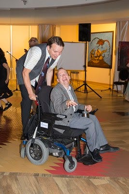
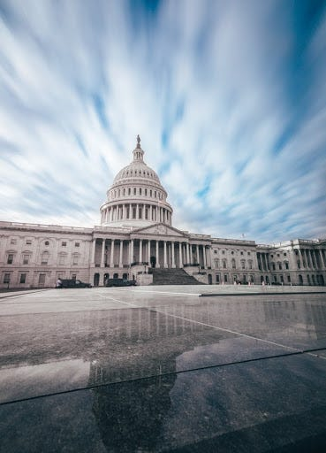
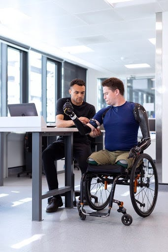

Mike Gifford is a Senior Strategist at CivicActions, a Drupal core maintainer, and accessibility advocate. He’s passionate about changing the conversation around accessibility in civic tech by moving beyond compliance to view these needs for what they are: a human right.
The world of civic tech is deep and wide. Why accessibility? What approach should we be taking as we attempt to learn about issues within the accessibility community?

Mike: For me, it started with empathy and friendship. Alan Shain, who’s been a roommate and friend since 1990, has cerebral palsy. He’s a former bureaucrat and a comic who has been active in the Canadian arts community.
He’s taught me the importance of the disability rights movement. Knowing him got me thinking more about humanity and the abilities we possess, and the notion that we are all only “temporarily able-bodied.” We have some abilities right now, but that may change drastically tomorrow. As we grow older, things inevitably happen to our bodies. Yet, we have a big aversion to the idea of our own mortality, so we often overlook that.
“We are all only temporarily able-bodied — we have some abilities right now, but that may change drastically tomorrow.”
Through many conversations with Alan, I’ve become more appreciative of how other people move through this world. There’s much more to accessibility than people realize. It helps to open our minds and consider that there are temporary and situational disabilities, such as ones caused by medications, or even by losing your glasses. You could have trouble doing your taxes because you have to care for your children, or because you’re simply struggling to juggle more than one thing at a time. You could be trying to access a website with low contrast while outside on a sunny day. These are all examples of accessibility issues.
“There are temporary disabilities and situational ones, such as ones caused by medications, or even by losing your glasses.”
When you think about web accessibility, what are some common misconceptions or mistakes you see? How can they be addressed?
A lot of people assume things are accessible, when in fact they are not. Take Drupal’s website, for example. People assume that Drupal.org is accessible, and therefore, no other work needs to be done. While Drupal has some built-in accessibility features, there are other issues that aren’t coming to light.
I would love to have people adopt the mindset that accessibility features should be included from the start, and not as an afterthought. Wanting to be more accessible today than yesterday should always be the goal. This means building frameworks that pave the way for forward-thinking practices. We’re dealing with something that changes all the time, so it’s about more than just performance. We need to be constantly finding ways of bringing more people into the conversation; we’re excluding far too many people.
“I would love to have people adopt the mindset that accessibility features should be included from the start, and not as an afterthought.”
What changes have you seen over time in this industry?
The number of educational resources addressing accessibility issues has increased significantly. And they are much more timely and interesting than a decade ago, when the conversation first shifted towards these issues.
For example, tools like axe accessibility testing provide more opportunities to uncover problematic issues on websites. It would be great if we could monitor those instances even more. In Europe the government is tasked with monitoring the access of all public websites. The results have to be published, which holds them accountable to the standards they set, and increases the transparency of existing issues. If a department scores low on accessibility compliance, people will know, and expect a response. It’s like checkers! The good thing is that there are standard automated tools that can trawl websites and show where improvements can be made.

Where do you see web accessibility going in the future? Do you have any “big bets” when it comes to emerging technologies or trends?
I think VR and augmented reality will have a big impact soon. We’re at the edge of them being more meaningfully included in our lives. It would be great for engagement — an interactive way to start thinking about how to make emerging technologies more accessible. Computers are built into so many devices, but they still contain significant impairments. Washing machines and other appliances could be adapted to be more intuitive, too.
For people reading this, how can they be part of the solution?
Ask questions and explore what’s out there. Educate yourself, and spend time trying to understand how other people interact with the web and how important that access is to all of us. Look into features like the Wave toolbar and accessibility insights from Microsoft to get a sense of accessibility issues that others face. These tools are great for evaluating and aiding in awareness of the existing problems, and are structured to give users a visual cue of where they might be.
Also, try to make the conversation about accessibility personal. Ask people about the needs their parents might have as they age. What general challenges will they face? For example, when you’re younger, it’s easier for you to memorize things. but that changes as we age. Show people how we face similar challenges at different points in our lives, and normalize addressing those concerns now rather than later. That said, there are one in five people suffering from permanent disabilities, so the probability of you knowing someone with one is very high.
“Try to make the conversation about accessibility personal.”
Why should the government prioritize web accessibility in procurement?
Government is the largest single purchaser of goods and services, so as an entity, it has a huge impact on setting accessibility standards for everyone else. If the government commits to only buying accessible tech, it will change the world. Currently though, the federal government often favors certain corporations, or software or tools that have barriers to accessibility.
“If the government commits to only buying accessible tech, it will change the world.”

Do you see open source software as a way to improve accessibility at scale?
Yes, using open source tools can actually be part of an accessibility strategy for a government organization. For example, Drupal issues can affect a million websites that use it, but because it is open source, fixing issues in the Drupal core fixes them everywhere — the scalability is huge. With proprietary software, you’ll have to cobble together your best hope of an answer to any issues that arise. You may not be able to share information outside of a silo because of bureaucratic or intellectual property issues with the software you are being forced to use.
“Open source tools can actually be part of an accessibility strategy for a government organization.”
It’s more efficient to work in open source because when we get it right, it scales. The cost to the taxpayer for methods using proprietary software is unsustainable; there’s no way to share the wisdom. Everyone is struggling to find the same solutions to problems, and they end up cobbling something together instead of working effectively. Open source tech allows you to explore all your options and get the best answer to a problem, because you have a whole community supporting it. If you have questions about something, and the community answers them for you, it’s being answered for everyone else, too.
Learn more
- Mike Gifford at DrupalCon Global 2020
- Challenges in automating accessibility
- Writing impactful accessibility reports
- Accessibility initiatives from the White House
- How open source tools improve accessibility for government